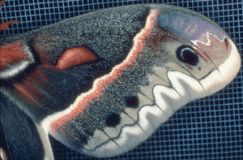

Hyalophora cecropia, wing
Return to Dominick Home Page

Detail of
forewing of the wild silk moth
Hyalophora cecropia
. The wing itself is transparent. The color comes from the hair-like scales which cover the wing surface.